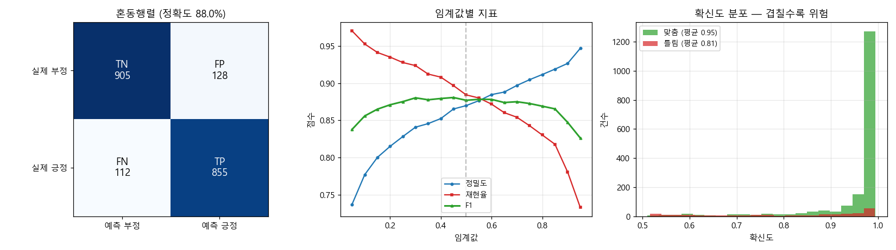

모델 colab_model (klue/roberta-base 파인튜닝)
작업 한국어 영화 리뷰 감성 분류 (긍정/부정)
평가 데이터 NSMC test split 2,000건 — 학습에 사용되지 않음
작성 2026-08-06 12:15
기준선(다수 클래스만 답하는 모델)은 51.6% 입니다.
정확도는 점 추정치가 아니라 86.6% ~ 89.4% 구간으로 읽어야 합니다.
| 항목 | 근거 | |
|---|---|---|
| ✅ | 기준선 초과 | 정확도 하한 0.8658 vs 기준선 0.5165 → 신뢰구간 하한이 기준선보다 높음 |
| ✅ | 오류 균형 | FP 128 / FN 112 (비율 1.14배) → 균형적 |
| ✅ | 판별력(ROC-AUC) | AUC 0.9511 → 0.5=무작위 / 0.7=쓸만함 / 0.8=좋음 / 0.9=우수 |
| ✅ | 데이터 누수 없음 | F1 0.8769 → 정상 범위 |
| ✅ | 표본 충분 | 2,000건 (오차 ±1.4%) → 1,000건 미만이면 오차가 커서 판단 곤란 |
| ✅ | 확신도 캘리브레이션 | 맞을 때 0.952 / 틀릴 때 0.814 (차이 +0.138) → 틀릴 때 확신이 낮음 = 정직한 모델 |
통과 6/6
| 목적 | 임계값 | 정밀도 | 재현율 | FP | FN |
|---|---|---|---|---|---|
| F1 최대 (균형) | 0.45 | 0.8653 | 0.8966 | 135 | 100 |
| 정밀도 95% 이상 유지 | 달성 불가 | — | — | — | — |
| 재현율 95% 이상 유지 | 0.10 | 0.7772 | 0.9524 | 264 | 46 |

DONGA KDT 허깅페이스 과정 STAGE 4 산출물 · 자동 생성